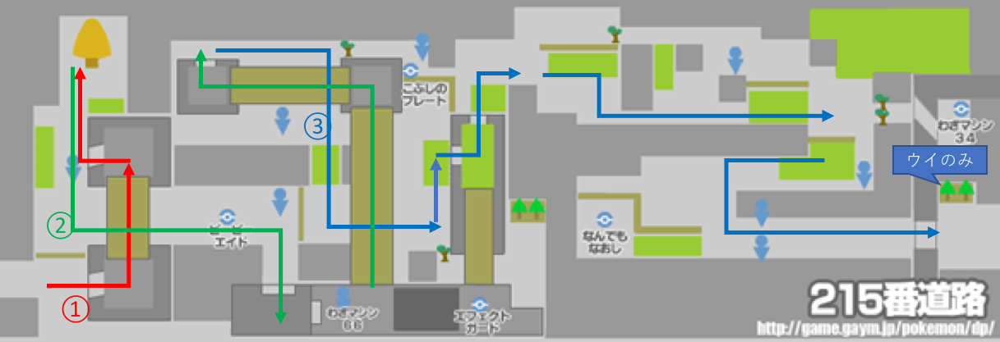

サブロム用チャート解説

はじめに
・ DSの時間は 「16時45分」にする。必ずしもこの時間にする必要はないが、「全国図鑑入手後に速やかに日付を変える」ことができる。
・ 博士の話が始まる。基本B連打。最初の質問は「だいじょうぶ！」を選択、トレーナー名は適当な「2文字」が理想。ライバルはデフォルトのものから短めのものを選ぶ。
フタバタウン
・ 自分の部屋で「せってい」を開き「はなしのはやさ はやい」「せんとうアニメ みない」に変更。
・ ライバルの家(左上)に向かう。ライバル家の二階に上がってライバルを見送った後、街の北側へ。
201番道路
・ 道なりに西へ進む。
シンジ湖
・ イベント。一回目は「ナエトル」二回目は「ポッチャマ」三回目は「ヒコザル」を選ぶ。いずれの場合も戦闘はこうげき(ひっかく はたく たいあたり)連打。
・ 戦闘後フタバタウンに戻る。
フタバタウン
・ 母からランニングシューズをもらう。これ以降「トレーナーを避ける場合」を除き原則としてBダッシュ前提で移動する。
201番道路
・ 草むらも走り抜けていい。道なりに東に進みマサゴタウンへ。
マサゴタウン
・ ポケモン図鑑受け取る。その後ヒカリ(コウキ)の誘導でショップ前に移動。
[1,2回目]
・ モンスターボール 3個 キズぐすり 2個 購入
・ ボール購入後、今来た道(201番道路)に向かいポケモン(なんでもいい)を1匹捕獲。キズぐすりをナエトル(ポッチャマ)に持たせる。
・ その後、マサゴタウンのPC二階、左から2番目のお姉さんに話しかけてユニオンルームへ入る。
・ メインに輸送後、電源切ってデータリセット(タイトル画面で↑ + B + select)。
[3回目]
・ モンスターボール 2個 キズぐすり 8個 まひなおし 1個 購入
・ フタバタウンの母に話をしに行き、その後マサゴタウンを通り抜けて202番道路へ。
201番道路〜202番道路
・ 捕獲チュートリアルを見る。ここでチュートリアルは遅い感。
・ 道中「ムックル」「ビッパ」が出たら捕獲する(両方ほしい)。
◇ たんぱん
・ムックル(60) ひっかく連打(適宜回復)
◇ ミニスカ
・ビッパ(36) ひっかく連打
・ビッパ(36) ひっかく＋ひのこ(ひのこを先にすると火傷でタイムロスする恐れがある)
◇ たんぱん
・コリンク(63) ひのこ2
コトブキシティ
・トレーナーズスクール(PCの左隣の建物)に入りライバルに「おとどけもの」を渡す。
・スクール内右側のトレーナー2人と戦う(右の子から先に倒す)
◇ じゅくがえり達
・ケーシィ2匹(192) ひっかく連打
・「技マシン10」をヒコザルにつかう(ちょうはつ消す)
・スクール出て、北に進むとポケッチカンパニーのイベント。ピエロの質問は全て「はい」で答えればOK。ポケッチもらったら東へ。
203番道路
◆ ライバル
・ムックル(84) めざパ→ひのこ
・ポッチャマ(126) めざパ→ひっかくorめざパ連打
ここで、ムックルとポッチャマに"どれくらいめざパが効いたか"＆"弱点(半減)だったかどうか"を要チェック．
(1)抜群ー抜群 ： でんき
(2)抜群ー等倍 ： いわ
(3)抜群ー半減 ： こおり
(4)等倍ー等倍 ： エスパー、ひこう、かくとう、ドラゴン、あく、どく
(5)等倍ー半減 ： はがね、みず、ほのお
(6)半減ー抜群 ： くさ
(7)半減ー等倍 ： むし
(8)無効ー等倍 ： じめん、ゴースト
☆ 等倍でムックルに半分近くは入らないと威力的にはほぼ使えない。
・ 野生が出たら1匹は倒す．
◇ 短パン(階段の上)
・コロボーシ(81) ひのこ
◇ ミニスカ(さらに階段の上)
・ビッパ(49) ひのこ
・ムックル(48) ひのこ(めざパでもいい)
・スボミー(57) ひのこ
◇ 短パン
・ワンリキー(112) ひのこ 2
◇ ミニスカ
・ムックル(60) めざパ(残ったらひっかく)
・ビッパ(61) ひのこ(残ったらひっかく)
クロガネゲート
・ いわくだきもらう
・ 手前のキャンプボーイは無視
◇ ガールスカウト(出口付近)
・スボミー(72) ひのこ
・コダック(85) ひっかく連打
クロガネシティ
・ ジム前に移動，ライバルと話す．
・ 街の右下，クロガネ炭鉱へ移動．
クロガネ炭鉱
◇ さぎょういん
・ワンリキー(144) ひのこ連打
・ ヒョウタと話す→左奥に落ちてるあなぬけのヒモを使って脱出
クロガネジム
◇ 短パン(下)
・イシツブテ(156) ひのこorめざパ
・ ここでモウカザルに進化(マッハパンチ→ひっかく消す)
◆ ヒョウタ
・イシツブテ(220) マッハ 2
・イワーク(277) にらみ→マッハ 2
☆イワークに「いやなおと」されてたら一回控えを生贄にしてからズガイドスは倒す
・ズガイドス(297) にらみ→マッハ
クロガネシティ
■ショップ
・ 売る：技マシン76
・ 買う：虫除けスプレー11(右の店員) ネットボール1(左の店員)
・ 左に進んでクロガネゲートを抜ける。クロガネゲート入ったらスプレー使う。同時にビッパにいわくだき教える。戦っていないトレーナーに注意。
203番道路
・ トレーナー避けつつ進むだけ。
コトブキシティ
◇ ギンガ
・ ズバット(103) ひのこ
・ ケムッソ(103) ひのこ
204番道路
◇ ミニスカ(一応避けられる)
・スボミー(102) ひのこ
あれたぬけみち
・ 左上に進み「技マシン39(がんせきふうじ)」回収。モウカザルに使う(にらみつけるを消す)
※ めざパがズバットに抜群(でんきこおりいわエスパー)だった場合は回収不要。
・ 右に進み洞窟を脱出。
204番道路
・ アロマのおねえさんも避ける。見つかったらひのこ連打で倒す。ねむけざまし拾う。
ソノオタウン
・ ついたらまず右に進み道路で女の子の話を聞く。その後ソノオタウンに戻り、街の左上(ソノオのはなばたけ)へと進む。
ソノオのはなばたけ
◇ ギンガ
・ケムッソ(103) ひのこ
・カラサリス(138) ひのこ
◇ ギンガ
・ズバット(126) がんせきふうじ
☆戦闘後おじさんから「あまいミツ」を8個購入(合計9個になる)。戦った場所から右奥に進んだ先にある木にミツを塗る。
ソノオタウン
・ クラボのみを回収(街中央付近、花屋さんの右に生えてる)
・ PC左の民家の女の子から技マシン88をもらう。
・ 右にそのまま進み、たにまの発電所へ。
205番道路→たにまの発電所(外)
・ 発電所前の木にミツを塗る。
◇ ギンガ
・ニャルマー(166) マッハ
・ キズぐすり拾う。
たにまの発電所(中)
・したっぱは全部避けられる
◆ マーズ
・ズバット(162) がんせきふうじ(めざパ)
・ブニャット(627) マッハ連打
・ イベント後、205番道路に戻って上に進む。
205番道路
・ 橋渡ったところの木にミツを塗る。
・ スプレー使う。バッグのクラボのみをモウカザルに持たせる。
☆ ここのトレーナーは非常に避けにくいので注意。落ちてるアイテムの回収は一切不要。
ハクタイのもり
・ スプレー使いながら進む。
◇ 虫取り＋ミニスカ(強敵・レポート推奨。)
・1ターン目：ケムッソ(103) ひのこ
・2ターン目：アゲハント(448) ひのこ
・3ターン目：カラサリス(169) ひのこ
☆ かえんぐるま覚える。めざパ(がんせきふうじ使ってない場合はにらみつける)消す。
・4ターン目：パチリス(360) かえんぐるま + マッハ
◇ サイキッカー＋サイキッカー
・ケーシィ2匹(480) かえんぐるま連打
・ 草むらを通って森を抜ける。
205番道路
・ 橋渡った先の木にミツを塗る。
・ もしパチリス戦でクラボのみを消費してたら回収してモウカザルに持たせる。
ハクタイジム
◇ ミニスカ
・チェリンボ(217) ひのこ
・ロゼリア(487) かえんぐるま
◇ アロマ
・スボミー(189) ひのこ
・スボミー(204) ひのこ
・スボミー(218) かえんぐるま
◇ アロマ
・ナエトル(233) かえんぐるま
◇ おとな
・ロゼリア(553) かえんぐるま
◆ ナタネ
・チェリンボ(276) かえんぐるま
・ナエトル(260) かえんぐるま
・ロズレイド(961) かえんぐるま(残るかも)
ハクタイシティ
・ PC右の家の老人に話しかけてたんけんセットをもらう。誘いは「いいえ」で断る。
・ 街の上側のビルに向かう。途中でいあいぎりをもらうので、ビッパに教える。
ギンガハクタイビル
◇ ギンガ(階段手前にいる奴。一人ずつ戦う。)
・ズバット(162) がんせきふうじ(残ってればめざパ)
・ニャルマー(213) マッハ
◇ ギンガ(階段手前にいる奴。一人ずつ戦う。)
・ケムッソ(150) ひのこ
・マユルド(199) ひのこ
◇ ギンガ
・ケムッソ(138) ひのこ
・カラサリス(184) ひのこ
・ズバット(138) かえんぐるま
◇ 研究員
・ユンゲラー(465) かえんぐるま
◆ ジュピター
・ズバット(207) がんせきふうじ(めざパ)
・スカタンク(895) かえんぐるま連打(強敵。えんまくされすぎたら交代。)
ハクタイシティ
・ 漢方薬屋(ビル前の道を右に進んだ先)に寄る。
・ 買う： ちからのねっこ 5個 ばんのうこな 2個 ちからのこな(買えるだけ)
・ 自転車屋で自転車もらう。バッグから自転車をYボタンに登録
☆ くさむすびをモウカザルに教える(ひのこを消す。技構成は かえんぐるま くさむすび マッハパンチ めざパorがんせきふうじ になる。)
・ 街の下側に進む。
206番道路(サイクリングロード)
☆ 全トレーナー避ける。最初は左端の岸壁から3マスのところからスタート。ルート覚える。
・ サイクリングロード突破したら右側のいあいぎりした先にある木にミツを塗る。スプレー使うこと。
・ ミツ塗ったら下に進む。

207番道路
ここはやることが多いので図を使って説明する。
・ ヒカリ(コウキ)からダウジングアプリとバトルサーチャーもらう。
① その近く(右下)にげんきのかけらが落ちてる。ダウジング使って回収する。
② 左側に木の実がなってる。ブリーのみ(右から2番目)を回収。
③ 木にミツを塗る。
④ 右側に進むが、下側のルートを進む。たんぱん小僧を避け、やまおとこの先に見えない「ふしぎなアメ」があるので回収。
・ やまおとこに見つかったらイシツブテはくさむすび、ズバットはがんせきふうじ(めざパ)。
⑤ バトルガール、もうひとりのやまおとこに見つからないようにテンガンざんへ入る。

テンガンざん
・ スプレー使う。アカギと話をする。
・ 中央付近の石に見えないピーピーエイドがあるので回収。
・ 右に進んで抜ける。
208番道路
・ まっすぐ進む。二連続やまおとこを避ける。
・ 階段降りたら右に進み、ブリーのみを回収(右から2番目)。すぐそばのアロマなおねえさんと戦う。
◇ アロマ(704円)
・ミツハニー(216) かえんぐるま
・ロゼリア(586) かえんぐるま
・ 道路の下側にある木にミツを塗る。からておうっぽい人はトレーナーじゃない。
・ 右に進んでヨスガシティへ。
ヨスガシティ
・ 街の上側に進んでコンテスト会場前のメリッサに話しかける。中に入る。
・ イベント後、街の下側に進むが、猿が負傷していればバッグで回復する。
◆ ライバル(2100円)
・ムックル(228) かえんぐるま
・ポッタイシ(643) くさむすび連打
・ポニータ(651) マッハ連打(なきごえ結構入ってたら交代。また、残りの手持ちを全て倒してもらう。)
・ロゼリア(651) かえんぐるま
☆ 戦闘終了後、手持ちで生きてるポケモンが猿1匹になるようにする。
・ 右下にある街の出口付近でピンプクのタマゴをもらう。
209番道路
・ 最初のブリーダーは上の草むらを通って避ける(スプレー使う)
・ つりびとから「いいつりざお」もらう。
・ 橋を渡った先、双子ちゃんの下側の橋を渡り、「ヨクアタール」回収。手持ち1匹なら双子ちゃんとバトルにならない。
・ 双子ちゃんの右側にげんきのかけらが落ちてる。ダウジングして回収。木にミツを塗る。
・ 道路に沿って進み、ロストタワーに向かう。草むらを通ってトレーナーは全回避。
ロストタワー
・ スプレー使う。2階でたんぱん小僧と戦って「まんまるいし」回収。
◇ たんぱん(256円)
・スカンプー(270) かえんぐるま
・コロトック(545) かえんぐるま
・カラナクシ(250) マッハ連打
・ 3階のスキンヘッド注意。見つかったら草結び。4階はラブラブカップルの前を通れる。
・ 最上階で左のおばあさんからかいりき回収。
・ トレーナー避けつつタワー出る。
209番道路
・ ロストタワー出てすぐのいあいぎりした先の技マシン47を回収。
・ カウガールの後ろを通って左上に行った先、自転車で登れる坂の上にリゾチウムがあるので拾う。
・ くさむらでビーダルをネットボールで捕獲する(必須)。かえんぐるまで削る。
ズイタウン
・ キーのみ回収(一番左)、猿に持たせる
・ ショップ
・ 売る： 技マシン88、技マシン47 ※リゾチウムは売らない。
・ 買う：ダークボール 5個 あなぬけのヒモ 1個 (1個もなければ)むしよけスプレー 1
・ 街の右側に進んでズイのいせきへ。
ズイのいせき
・ スプレーつかう。
・ 右上、左下、右上、左上、左上、右下の順。途中のいせきマニアに注意。
・ 最深部のアイテムを回収(左下だけはいらない)し、あなぬけのヒモで脱出。
・ 街の上に進む。
210番道路
・ まっすぐ進むと見つかるので途中で右の草むらに避ける。木にミツを塗る。
・ 右側に進んで215番道路へ。
215番道路
・ 歩道橋？渡った先の木にミツを塗る。
◇ いせきマニア(1104円)
・ドーミラー(324) かえんぐるま連打
・タテトプス(487) マッハ
・ 道の真ん中にあるピーピーエイダーを回収。
・ ブリーのみ回収。
◇ エリート(上 1380円)
・ニャルマー(349) マッハ
・ユンゲラー(714) かえんぐるま連打
◆ エリート(下・超強敵 1380円)
・モウカザル(699) マッハ連打
・ギャラドス(1054) くさむすび連打
・ ウイのみ回収。

トバリシティ
① ポイントアップ回収
② デパートで買い物
[3F(下のカウンター)] 買う：技マシン38(だいもんじ) 売る：きんのたま、あやしいおこう、ポイントアップ
[2F(上のカウンター)] 買う：スピーダー 4、プラスパワー 3、スペシャルアップ 7
[1F(右のカウンター)] 買う：シルバースプレー 3
・ PCで回復
③ ジム

トバリジム
・ からておう4人のうち3人と戦う。適宜バッグで回復。
◇ からておう(右)
・アサナン(546) だいもんじ
◇ からておう(手前)
・ゴーリキー(813) かえんぐるま 2~3
・アサナン(507) だいもんじ
☆ 左と奥はどちらか一人だけ戦えばOK。左の方が弱いので左推奨。
◇ からておう(左)
・ゴーリキー(782) かえんぐるま 2~3
・ワンリキー(401) かえんぐるま 1~2
・ゴーリキー(782) かえんぐるま 2~3
◇ からておう(奥)
・ゴーリキー3匹 (782*3) かえんぐるま連打
◆ スモモ(3600円 +ジムトレーナー約1900円)
・アサナン(526) プラスパワー1 スピーダー1 かえんぐるま
・ルカリオ(1311) かえんぐるま
・ゴーリキー(844) かえんぐるま 2
トバリシティ
・ ヒカリ(コウキ)の頼みを聞いて倉庫前のギンガだんと戦う。その前にPCで回復すること。
◇ ギンガ(2000円)
・1ターン目 ドクケイル かえんぐるま
・2ターン目 アゲハント かえんぐるま
・3ターン目以降 グレッグル・スカンプー 適当にかえんぐるま
・ 倉庫内のそらをとぶを回収。ムックルに教える。
・ ハクタイシティに飛ぶ
ハクタイシティ
・ サイクリングロード側のゲートにいる研究員から「がくしゅうそうち」をもらう。
・ トバリシティに向かう。
トバリシティ
・ 街の下(214番道路)に進む
214番道路
・ ここでは左側の山道を通って下から回り込むようにして数人のトレーナーと戦う。
・ ここで余計なトレーナーと戦うのは「ゴウカザルへの進化」「見つけた数稼ぎ」の二つの目的のため。
◇ サイキッカー(768円)
・ゴース(447) かえんぐるま
・ユンゲラー(745) かえんぐるま
・ムウマ(724) かえんぐるま連打
・ 右側でザロクのみ(一番右)を回収。
・ 一人目のいせきマニアは草むらを通って避ける(むしよけあれば使う)
◇ いせきマニア(1248円)
・タテトプス(551) マッハ
◇ ポケモンコレクター(1536円)
・ロゼリア(716) かえんぐるま
・ロゼリア(781) かえんぐるま
◇ サイキッカー(736円)
・ゴースト(621) かえんぐるま
・ユンゲラー(714) かえんぐるま
◇ おとな(1400円)
・ミノマダム(851) かえんぐるま
・ 下に進む(リッシ湖のほとり・213番道路へ)
リッシ湖のほとり〜213番道路
・ しばらく道なりにひたすら進む。トレーナーはゲート抜けた先。
◇ うきわ女(きょろきょろしてる子)
・ビーダル(571) マッハ
◇ つりびと(704円)
・コイキング(81) くさむすび
・テッポウオ(317) くさむすび
・ギャラドス(1008) くさむすび連打
◇ おとな(1288円)
・ニャルマー(349)
・ ノモセシティへ。
ノモセシティ
・ まずはノモセシティを通り抜けて212番道路に行き、すぐ上の沼の中にあるふしぎなアメを回収。その後ノモセシティに戻る。
ノモセジム
・ まずまっすぐ進み、つきあたりを左に。階段登ったところのオレンジスイッチを押す。
・ 右の階段を一番下まで降り、どんどん奥に行きます。すると奥の階段を全部登った先に緑スイッチがあるので押す。
・ 一段分階段を降りて道なりに手前へ進む。すると階段を登った先にふなのりがいる。
◇ ふなのり(768円)
・キャモメ(328) だいもんじ
・キャモメ(328) だいもんじ
・青スイッチを押し、手前に橋を渡って進む。うきわボーイと戦う。その先にうきわガールがいる。
◇ うきわボーイ
・ブイゼル(417) くさむすび
◇ うきわガール
・ルリリ(169) マッハ
・マリル(297) マッハ連打
・ まっすぐ奥に進んだ先の緑スイッチを押す。次に右手前の奥にあるオレンジスイッチを押す。
・ 一番奥に進み、そのまま道なりに左側へ進んで階段を登りきる。
◇ ふなのり(768円)
・カラナクシ(375) マッハ連打
・キャモメ(328) だいもんじ
・カラナクシ(375) マッハ連打
・青スイッチを押す。ジムリーダーの元へ行けるようになる。
☆ モウカザルの経験値取得状況によって進化タイミング(36レベ)が多少異なる場合がある。36レベでインファイトを覚える時マッハパンチを消す。なので、進化した状態で対戦したトレーナーについては マッハをインファに切り替えて攻略すること。また、これ以降、学習装置をポニータに持たせて攻略を進める。
◆ マキシ(3600円)
・ギャラドス(1237) くさむすび連打
・ヌオー(792) くさむすび
・フローゼル(1143) くさむすび連打
・戦闘後は回復しなくてよい。
ノモセシティ
・ だいしつげんに入り、エリア入ってすぐ右にいるエリートトレーナーからきりばらいをもらう(500円かかる)。エリア左奥のふしぎなアメを拾う。
☆ このタイミングでメインと交換する。メインの準備がまだ終わってなかった時は大湿原で適当な野生を捕獲し、ちかつうろで化石を掘って時間を潰す。
| メイン | サブ |
| ゴウカザル | ゴウカザル(アメ) |
| ズバット | ムックル(アメ) |
| ポニータ | 適当な野生(アメ) |
| ミミロル | 適当な野生(アメ) |
☆ ここで一度ヨスガシティに飛んで「ふれあいひろば」の「おまもりこばん」を回収して猿に持たせてからノモセに戻る。
・ 手持ちは「ゴウカザル＠おまもりこばん」「ミミロル(いあいぎり・いわくだき要員)」「ズバット(空を飛ぶ・きりばらい要員)」 「ポニータ＠学習装置」「ビーダル(かいりき・たきのぼり・ロッククライム要員)」「タマゴ」
・ だいしつげん入り口横にいるギンガだんに話しかけ、追いかける。
・ ノモセシティ入り口でライバルとバトル
◆ ライバル(2800円*2)
・ムックル(312) かえんぐるま
・ポッタイシ(858) インファイト
・ポニータ(813) インファイト
・ロゼリア(813) かえんぐるま
213番道路〜リッシ湖のほとり
・ したっぱを追いかけながら進む。途中のゲートで受付の人に話すと回復できる。
・ リッシ湖のすぐ手前でしたっぱとようやくバトル
◇ ギンガ(1000円*2)
・ニャルマー(379) かえんぐるま
・ シロナと話す。ひでんのくすりをもらう。ズイタウンへ飛ぶ。
ズイタウン
・ ショップ
買う：ダークボール25個
・ 道路を上に進む。コダックの群れにひでんのくすりを使う。
210番道路(上側)
・ すぐきりばらいを使う。
・ 図のように進み、丸のついてるトレーナーだけ戦う。
・ ウイのみを回収する。
◇ エリート
・ポニータ(879) インファ
・ハヤシガメ(815) かえんぐるま
◇ エリート
・ガーメイル(851) かえんぐるま
・イワーク(601) くさむすび
・ルクシオ(676) だいもんじ
◇ からておう
・ゴーリキー(907) だいもんじ
◇ とりつかい
・ホーホー(335) かえんぐるま
・ヨルノズク(937) かえんぐるま
◇ ベテラントレーナー
・ブイゼル(417) くさむすび
・キリンリキ(830) かえんぐるま
・ゴーリキー(813) インファイト
カンナギタウン
・ 遺跡の前に移動。長老と話した後、一度左側の道路(211番道路)に抜けて、ヒメリのみを回収して戻ってくる。遺跡前でしたっぱと戦う。
◇ ギンガ
・アゲハント(862) かえんぐるま
・グレッグル(480) かえんぐるま
・ 戦闘後遺跡に入り壁画を調べる。なみのりをもらう。遺跡を出る。
・ カンナギタウンの左上のショップへ。
・ 買う：いいきずぐすり 11個、げんきのかけら 4個、シルバースプレー 12個。
・ ヨスガシティへ飛んでジムへ。だいもんじのPPが2以下ならPCで回復。
ヨスガジム
・ まずは「右、真ん中、右」の順に入る。
◇ じゅくがえり
・フワンテ(762) かえんぐるま
・フワンテ(762) かえんぐるま
・ その部屋を出て、「左、右」の順に入る。
◆ メリッサ
・フワライド(1398) スペシャルアップ、ヨクアタール、だいもんじ
・ムウマージ(1441) だいもんじ
・ゲンガー(1383) だいもんじ
・ コトブキシティへ飛ぶ。
コトブキシティ
・ PCで回復。左側の道路(218番道路)へ。
218番道路
・ スプレー使いなみのりしてふしぎなアメ回収。
・ 全部トレーナー避けて進む。
ミオシティ
☆ 手持ちの先頭をビッパに変更。橋の上でライバルと勝負。
◆ ライバル
・ムクバード(750) ビッパが尊い犠牲になった後、猿を出しインファイト。
・ポッタイシ(1072) インファイト
・ヘラクロス(1285) かえんぐるま
・ポニータ(1041) インファイト
・ロゼリア(1041) かえんぐるま
・ ジムに行く。
ミオジム
・ ジム攻略ルートは攻略本参照。
☆ だいもんじのPPが切れたらヒメリのみを使う。
◇ からておう
・ハガネール(1386) かえんぐるま 2
◇ エリート
・スコルピ(732) かえんぐるま
・ハガネール(1344) だいもんじ
◇ 作業員
・イワーク(671) くさむすび
・イワーク(671) くさむすび
◇ からておう
・イワーク(694) くさむすび
・ハガネール(1344) だいもんじ
◇ エリート
・マリルリ(1081) くさむすび 2
◆ トウガン
・ドーミラー(555) かえんぐるま
・トリデプス(1663) インファイト
・ハガネール(1512) だいもんじ
ミオシティ
・ 橋のそばにあるミオシティ図書館3Fに進む。
・ 図書館でイベントを終えた後、手持ちの2番目をビーダルに変更。ノモセシティへ飛ぶ。
ノモセシティ〜213番道路〜リッシ湖のほとり
・ 道中、ゲートで回復する。
リッシ湖
・ したっぱは全部避ける。最初の方のしたっぱは極度の近眼。
・ 洞窟内でサターンと戦う。
◆ サターン
・ユンゲラー(1087) かえんぐるま
・ドクロッグ(1435) だいもんじ
・ドーミラー(540) かえんぐるま
・ 自宅(フタバタウン)へ飛ぶ。その後シンジ湖へ向かう。
◇ したっぱ(ダブルバトル)
・こちらはゴウカザル＋ビーダル。
・1ターン目 ニャルマーにかえんぐるま、ビーダルはまるくなる。
・2ターン目 カラサリスにかえんぐるま、ビーダルはころがる(不発)。
・3ターン目 ゴルバットにかえんぐるま＆ころがる
・4ターン目 ニャルマーにかえんぐるま＆ころがる
・ なみのりして次のしたっぱを避けて、マーズと戦う。
◆ マーズ
・ゴルバット(1355) かえんぐるま 2
・ドーミラー(570) かえんぐるま
・ブニャット(1529) インファイト
・ カンナギタウンに飛び、左側の道路(211番道路)へ。
211番道路
・ スプレー使ってテンガンざんへ入る。
テンガンざん
・ かいりきをビーダルに教える。かいりき使って上に進む。
・ いわくだきした先にふしぎなアメがある。
・ 地下に降りて、まっすぐ上に進む。突き当たりの階段の周りにふしぎなアメが落ちてるので回収。
・ そのまま洞窟を抜ける。
217番道路
・ 階段で上に登らず、下道を進む。エリートトレーナーの後ろを通って避ける。
・ 道なりに進んで上に向かう。
◇ エリート
・ライチュウ(888) かえんぐるま
・ペリッパー(1264) くさむすび連打。混乱したらビッパに交代。
・ヒポポタス(772) くさむすび
☆ 道中でロッククライム(民家の右後ろ)を必ず回収。
エイチ湖のほとり
◇ エリート
・ロゼリア(1204) かえんぐるま
・アズマオウ(1347) インファイト
・ キッサキシティへ。
キッサキシティ
・ PP的には回復不要。
☆ ジム戦後にポニータが進化する場合があるので、遅くともここまで(カンナギ、ヨスガ、ミオでも良い)でタテトプスを交換してもらう。
・ ジムへ。
キッサキジム
・ 攻略ルートがやや複雑で難しい。途中のトレーナーも避けにくい。ある意味、最難関のジムである。
◆ スズナ
・ユキカブリ(1066)、ユキノオー(1926)、ニューラ(1074) 全部かえんぐるま
・チャーレム(1311) だいもんじ
・ エイチ湖のほとりへ向かい、そのままエイチ湖へ。回復は不要！！
エイチ湖
・ イベント見る(念のためライバルと話す？)、その後トバリシティへ飛ぶ。
トバリシティ
☆ ミオジムでヒメリのみを消費していなければPC回復不要。
・ ギンガだんアジトの前にいるしたっぱに話しかけてそうこのカギ回収。倉庫に向かう。
ギンガだん倉庫/ギンガだんアジト
☆ 図の矢印に沿って進む。
① まず倉庫スタート地点から入り緑矢印に沿って進む。
② 倉庫でカギを入手してからアジト(本部)に入り、紫矢印に沿って進む。
☆ 以下、言葉での説明。図と合わせて見ることを推奨。
[倉庫] ・ カギ使って入る。やみのいし拾う。
・ 最初の方のしたっぱは避ける。
◇ ギンガ
・ ドクケイル(1207) かえんぐるま
・ ドーミラー(540) かえんぐるま
・ 階段のぼって1Fへ。
・ したっぱ避け→左ワープ→道なりに→階段登る→左ワープ→階段降りて、研究員に見つからないよう下側を通って部屋に入る→階段降りて最初の地下へ。
・ カギを回収して倉庫を脱出。
[アジト(本部)]
・ 真ん中の扉から入る。最初の階段のぼった先、左側のしたっぱだけ倒す。
◇ ギンガ
・ゴルバット(1318) だいもんじ
・ゴルバット(1318) だいもんじ
・ 右側のしたっぱは避けて、壁の向こうのワープパネルへ。
・ ワープ先のベッドで回復して階段のぼる。階段先のしたっぱを一人ずつ倒す。
◇ ギンガ(上)
・グレッグル(622) かえんぐるま
・スカンプー(592) インファイト
・ニャルマー(532) かえんぐるま
◇ ギンガ(下)
・スカンプー(609) インファイト
・グレッグル(639) かえんぐるま
・ 3択ワープパネルの部屋。まず真ん中のワープで飛んで、ピーピーリカバーと見えないふしぎなアメを回収。
・ 戻ってきて左のパネルで飛ぶ。アカギと戦う。
◆ アカギ
・ヤミカラス(916) インファイト
・ゴルバット(1465) だいもんじ
・ニューラ(1215) かえんぐるま
☆ マスターボールもらう。コレ使えばアカギもディアルガ捕まえられただろうにな。
・ 研究室奥でサターンと戦う。
◆ サターン
・ユンゲラー(1180) かえんぐるま
・ドーミラー(585) かえんぐるま
・ドクロッグ(1551) だいもんじ
・ 脱出用ワープパネルも利用して外へ。クロガネシティへ飛ぶ。
クロガネシティ
・ 上、右と207番道路へ進み、テンガンざんへ。PCに寄ってもいい。
・ ロッククライムをビーダルに教える。ころがる消す。
テンガンざん
・ [山頂までの攻略ルートは作成中。]
・ 雪原で見えないふしぎなアメを回収しておく。
◇ ギンガ
・ドーミラー(570) かえんぐるま
・ゴルバット(1354) だいもんじ
◇ ギンガ
・ゴルバット(1354) だいもんじ
・ドーミラー(570) かえんぐるま
・ニャルマー(562) インファイト(かえんぐるま)
テンガンざん山頂
☆ タテトプスを受け取っていれば、ゴウカザル＋タテトプスでダブルバトルする。
◇ ギンガだん(ダブルバトル)
・1ターン目 ドクケイルにかえんぐるま、ビーダルはまるくなる(タテトプスで鉄壁)
・2ターン目 グレッグルにかえんぐるま、ビーダル(タテトプス)回復or猿回復or猿のPP(だいもんじ)回復
・3ターン目 スカンプーにかえんぐるま
・4ターン目 ニャルマーにかえんぐるま
・ イベント観る(かっこいい〜)
・ 強敵なのでレポート書く
◆ マーズ＆ジュピター(8125)
１ターン目 ドーミラー右 かえんぐるま
２ターン目 ゴルバット だいもんじ
３ターン目 ブニャット インファイト
４ターン目 ドーミラー かえんぐるま
５ターン目 ゴルバット だいもんじ
６ターン目 スカタンク だいもんじ
・ ライバルが回復してくれる。お前回復する余裕あるなら一緒に戦えよ。
・ ここで再度レポート書く。必ず書くこと。
◆ アカギ
・ドンカラス(1803) プラスパワー、(ドリルされたら回復)、インファイト
・ギャラドス(2063) くさむすび 2 (アクアテールor地震されたらビッパ・ビーダルを壁にして全回復する。ギガインパクトされたらスピーダー使う)
・クロバット(2010) だいもんじ連打。スピーダー使ってなかったら使ってから殴る。(倒されたら適宜壁を出して回復)
・マニューラ(2046) スピーダー使用済みならインファイト。使ってない場合はHP少なければ回復してからインファイト
・ すぐレポート書く。
◇ ディアルガ
・インファイトで削る。倒しちゃったらリセット。
・3割ぐらいまで削ったらダークボール投げる。思ったより捕獲できるはず。
・ 捕獲したらズイへ飛ぶ。
☆ ここで「ズガイドス」を発掘しにちかつうろへ向かう(もうすでに捕獲できていた場合は以下の小さいタスクを進める)。
タスク1：「シンジ湖」「リッシ湖」「エイチ湖」に行き「エムリット」「アグノム」「ユクシー」に出会う(すぐ逃げる)。
タスク2：「ハクタイのもり」へ行き「ヤミカラス」「カラサリス」を捕獲する。
タスク3：「221番道路」へ行き「スカンプー」「スカタンク」を捕獲する。
タスク4：「214番道路」へ行き「ウソッキー」を捕獲する。
204番道路
204番道路
204番道路
204番道路
204番道路
204番道路
204番道路
204番道路
204番道路
204番道路
204番道路
204番道路
204番道路
204番道路
細かい注意点
対戦トレーナー詳細(google spread sheets)
外部リンク
◇ マップ画像は以下のサイトからお借りしました。
・ゲーム日記様
・ポケットモンスター ダイヤモンド 攻略Wiki様